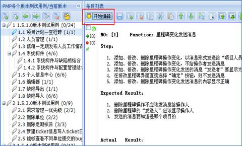
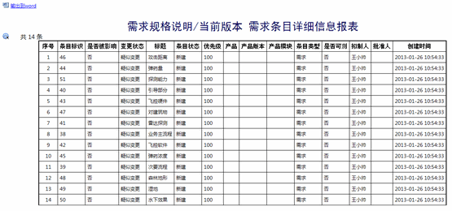

需求管理主要用于项目进行过程中各类文档及其关联关系的建立和管理，实现了文档按节次和条目管理、文档版本管理、文档关联关系管理、文档变更管理四大功能，使得项目人员更好地对项目过程进行有效的管理和控制。
点击查看如何管理项目需求？
4.2.6.1 系统用户
4.2.6.1.1 文档建立人员和文档被授权用户
项目人员1可以是文档建立人员，也可以是文档被授权用户。文档被授权用户是指得到文档建立者的授权，有权限去修改和管理其文档的用户。
项目人员1拥有文档管理、文档版本管理、文档关联关系管理、文档变更管理权限。
4.2.6.1.2 文档未被授权用户
项目人员2是文档未被授权用户，即文档建立人员和文档被授权用户以外的用户。
项目人员2拥有查看文档节次和条目、文档版本查看、文档关联关系查看、文档变更查看的权限。
4.2.6.2 概念
4.2.6.2.1 节次和条目
节次是指文档的章节，即图中左边的树状结构，所有的节次以及节次间的关系一起构成了整篇文档的结构。节次间可以是父子关系，也可以是平行关系。可以点击“提升节次”和“降低节次”按钮来改变节次间的关系，也可以通过拖拽节次来改变。
一个条目即是一段文档内容，整篇文档由若干条目构成。一个或多个条目构成一个节次。选中一个节次，则编辑器窗口列出该节次下所有条目。
图 节次和条目
4.2.6.2.2 文档版本
项目进行过程中同一文档有时会发布多个版本，文档每发布一次就会生成一个新的文档版本，每个文档版本对应一个版本号。
4.2.6.2.3 文档关联
项目进行过程中各类文档内容之间可能存在着一些依存关系，文档之间的这种依存关系称之为文档关联；文档关联关系的建立操作只限于文档的当前版本和它自身关联、文档的当前版本和其它类文档的已发布版本进行关联。
4.2.6.2.4 变更管理
项目进行过程中文档条目内容发生了变化，相关联的条目内容都会受到影响，变更管理即是针对文档内容变化和相关影响进行的管理，项目人员依据变更管理即可查看条目变化情况和条目变化影响。
4.2.6.3 文档管理
图 文档列表和版本列表
4.2.6.3.1 文档创建与删除
在项目列表中选择一个项目，通过文档列表工具栏的“新建文档”、“删除文档”和“修改文档”按钮可以添加、删除和修改文档；使用右键弹出菜单中的“删除文档”、“修改文档”也可以删除和修改文档。文档分为需求文档，设计文档，测试文档三大类，新建文档的时候需要选择文档类型，文档建立以后文档类型不可更改。
4.2.6.3.2 模板管理
在项目列表中选择一个项目，通过文档列表工具栏的“管理模板”按钮打开模板管理界面，进行添加、修改、删除、预览条目模板的操作。通过右键菜单的“管理模板”也可以打开模板管理界面。
模板在编辑条目时可供文档编辑者选择使用。建立一些通用的文档模板能有效的提高文档编写效率，如测试用例模板，项目计划模板，测试计划模板等。
4.2.6.3.3 文档编辑
在文档列表中选择一个文档，然后选择该文档的当前版本，通过版本列表工具栏中的“编辑内容”按钮打开编辑页面，或者在版本列表中点击当前版本的链接打开编辑页面。如下图所示：
图 文档编辑一
在编辑页面点击条目列表工具栏的“开始编辑”按钮对当前版本进行编辑。文档编辑页面如下图所示：

图 文档编辑二
4.2.6.3.3.1 编辑节次
在编辑页面通过左侧节次列表工具栏的“新建节次”、“新建子节次”、“提升节次”、“降低节次”、“修改节次内容”和“删除节次”按钮编辑节次；或通过右键菜单中的各操作编辑节次。节次顺序和层次关系调整还可以通过拖拽来实现。
4.2.6.3.3.2 编辑条目
在编辑页的节次列表中选择一个节次，通过条目列表工具栏的“插入条目”、“批量删除条目”、“复制”、“剪切”、“粘贴”、“条目上移”、“条目下移”、“全选”、“取消全选”按钮编辑条目。
4.2.6.3.3.3 保存内容
在编辑页面节次和条目编辑完成后，通过条目列表工具栏的“保存”按钮保存编辑内容。
4.2.6.3.3.4 退出编辑
编辑内容保存后通过条目列表工具栏的“退出编辑”按钮退出编辑状态。如果在点击“退出编辑”按钮前还没有保存编辑内容，将会提示用户是否保存当前编辑的内容。
4.2.6.3.3.5 查找与替换
编辑页面进入编辑状态后，通过条目列表工具栏的“查找与替换”按钮打开查找与替换界所示，查找替换的范围是被编辑版本的所有条目中指定的字符或字符串。
注意：要查找的内容可以指定显示颜色。
图 查找与替换
4.2.6.3.3.6 选择模板
编辑页面进入编辑状态后，通过条目列表工具栏的“选择模板”按钮打开项目模板列表图所示，在该界面选择并应用了某个模板后，新添加的条目样式将按照应用模板样式显示，用户可以在应用模板样式的基础上继续编辑条目，提高了用户的文档编写效率。
图 选择模板
4.2.6.3.3.7 查看条目变更历史
在编辑页面通过条目列表工具栏的“条目变更历史”按钮打开如图所示的条目变更历史界面，在该界面中可以查看条目添加、修改的变更全过程以及版本变更历史。在版本变更历史中可以查看到条目的详细信息。在变更全过程中可以查看条目内容变化前后的详细信息，用户可以比对查看。
注意：查看条目变更历史无需进入编辑状态。
图 查看条目变更历史
4.2.6.3.3.8 查看已删除条目
通过编辑页面中条目列表工具栏的“查看已删除条目”按钮查看已删除的条目，如下图所示。
图 查看已删除条目
4.2.6.3.4 文档附件
在文档列表中选中一个文档，通过工具栏或右键菜单的“管理附件”打开附件管理界面，在附件管理界面可以上传、删除附件，界面如下图所示。
图 文档管理-附件管理
也可以在条目中添加附件。点击条目编辑框右下角的附件链接打开附件添加窗口。界面如下图所示：
图 条目管理-附件管理
4.2.6.3.5 合并文档
1、在文档列表中选择一个文档，通过工具栏或右键菜单的“合并文档”按钮打开如图所示选择被合并文档的界面。
注意：合并文档的操作仅限于两个同类型文档的当前版本。
图 选择文档界面
2、在被合并文档界面中选择一个文档，然后选择界面下方的“确定”按钮打开合并操作界面如图所示。合并操作除了条目内容的合并外，还支持节次合并，可将被合并文档的节次拖拽到主文档的节次。
图 合并文档
4.2.6.3.6 文档授权
在文档列表中选择一个文档，通过工具栏或右键菜单的“授权”按钮打开文档授权界面，在该界面通过“添加人员”按钮添加被授权人以及读写权限。未经授权的项目人员只能查看该文档相关信息，不能编辑该文档。界面如下图所示。
图 文档授权
4.2.6.3.7 文档导入
通过文档列表工具栏的“导入文档”按钮打开导入文档操作界面，在该界面经过上传数据包，检测标准表和导入数据的三步操作，将从文档管理中导出的数据包（zip格式）导入到该系统的文档管理中。导入界面如下图所示。
图 导入文档
4.2.6.4 文档版本管理
版本列表如下图所示。
图 版本列表
4.2.6.4.1 发布版本
在版本列表中选择当前版本，通过工具栏或右键菜单的“发布版本”发布版本，界面如下图所示。
图 发布版本
4.2.6.4.2 比较版本
在版本列表中选择当前版本或者其它已发布版本，通过工具栏或右键菜单的“比较版本”按钮打开选择目标版本界面，在该界面勾选某一个要比较的版本，然后点击界面下方的“开始比较”按钮查看比较结果。
4.2.6.4.3 导出版本
在版本列表中选择当前版本或其它已发布版本，通过版本列表工具栏或右键菜单的“导出版本”按钮打开导出版本界面如图所示，在该界面勾选要导出的节次并打包，然后选择界面的“下载”按钮导出文档。
图 导出版本
4.2.6.4.4 定位条目
在版本列表中选择当前版本或其它已发布版本，通过工具栏的“定位条目”按钮打开定位条目操作界面如图所示，在该界面输入要查找的条目标识或条目标识的序列号，点击“开始查找”按钮定位到所要查询的条目。
图 定位条目
4.2.6.4.5 列表视图
在版本列表中选择当前版本或其它已发布版本，通过工具栏的“列表视图”按钮打开列表视图如图所示，在该界面可以根据各类条件组合过滤查询条目，
文档授权用户可以修改编辑条目内容。
图 当前版本-列表视图
条目信息支持报表输出查看，点击上图工具栏中的“输出报表”，结果如下图所示。

图 条目详细报表
需求条目生成计划任务：可以通过点<生成任务>按钮，将选中的需求条目生成为计划任务图所示：
图 生成计划任务
4.2.6.5 文档关联关系管理
依赖文档和变更依据列表如下图所示。
图 依赖文档列表
4.2.6.5.1 文档关联
在文档列表中选择一个文档，此时依赖文档列表中默认显示该文档的当前版本，即该文档的当前版本和它自身是默认关联的。通过依赖文档列表工具栏的“关联”、“解除”和“更新”按钮可以新建、解除和更新文档关联。在依赖文档列表中选择关联的文档，通过右键菜单的“解除文档关联”和“关联更新”按钮也可以解除和更新文档关联。
注意：在文档列表中选择一个文档，该文档可以关联系统中所有项目的文档的已发布版本。
新建文档关联界面如下图所示：
图 新建文档关联
4.2.6.5.2 条目关联
在版本列表中选择当前版本，通过工具栏或右键菜单的“关联”按钮打开选择关联版本界面，或在版本列表中点击当前版本链接，在打开的编辑页面通过条目列表工具栏的“关联”按钮进行条目关联相关操作。
图 建立条目关联一
图 建立条目关联二
在选择关联版本界面选择要建立关联的文档版本，然后选择界面的“确定”按钮打开关联条目管理页面如图所示。在关联条目管理页面选择一个被依赖条目，然后通过条目列表操作区的建立关联或解除关联按钮（绿色、红色小图标）建立或解除条目关联。
图 关联条目管理
4.2.6.5.3 查看关联条目
在依赖文档列表中选择一个关联项，通过工具栏或右键菜单的“查看条目”按钮查看被选项依赖的条目，如下图所示。
图 查看关联条目
4.2.6.5.4 查看关联统计
在依赖文档列表中选择一个关联项，通过工具栏或右键菜单的“查看关联统计”按钮查看被选项关联的统图所示。
图 关联情况统计
4.2.6.6 文档变更管理
文档变更依据列表如下图所示。
图 变更依据列表
4.2.6.6.1 变更依据
版本列表中当前版本被选中的情况下，通过变更依据列表工具栏的“添加”、“删除”和“修改”按钮添加、删除和修改变更依据，或通过右键菜单的“删除”和“修改”删除和修改变更依据。文档当前版本发布版本后形成了正式版本，那么前版本对应的变更依据也会变为正式版本的变更依据，正式版本的变更依据不可编辑。
4.2.6.6.2 变更影响
在条目关联后，如果被依赖的条目发生变化，则依赖于它的条目、条目所在文档、版本将被标记为“被影响”，如下图所示。
点击可将影响标记取消。当一个版本中所有条目的影响标记被取消后，此版本的影响标记会被自动取消。当一个文档所有版本的影响标记被取消后，此文档的影响标记会被自动取消。
图 文档树变更标记
图 版本列表变更标记
图 列表视图变更标记
4.2.6.6.3 变更依据附件
在变更依据列表中选择一条当前版本对应的变更依据，通过变更依据列表工具栏或右键菜单的“管理附件”按钮打开附件管理界面如下图所示，在该界面通过工具栏的“上传附件”或“删除附件”按钮上传或删除附件。
图 附件管理
4.2.6.7 输出报表、打印
4.2.6.7.1 输出文档统计报表
通过文档列表工具栏的“输出报表”按钮打开选择文档界面，在该界面选择要统计的文档，然后选择“继续”按钮输出统计报表，如下图所示：
图 输出文档统计报表
4.2.6.7.2 输出版本统计报表
1、在版本列表中选择一个版本，通过工具栏或右键菜单的“输出报表”按钮输出所选择版本的统计报表。统计报表如下图所示。
图 输出版本统计报表
2、输出的版本统计报表中列出了该文档和其它文档之间的关联关系，点击表格中的关联条目数的数字链接，可以查看到具体的两个文档间的关联条目内容。如下图所示。
图 输出文档关联关系表
4.2.6.7.3 文档内容打印输出
在版本列表中选择一个版本，通过工具栏的“打印输出”按钮查看打印列表，打印列表中列出了打印输出的内容；可以按照不同的章节进行打印输出，在打印前还可以进行打印预览。如下图所示。

图 查看打印列表
4.2.6.7.4 输出文档关联统计报表
在文档列表中选择一个文档，通过依赖文档列表工具栏的“输出报表”按钮输出所选文档的各个版本和关联文档之间的关联条目统计报表，统计信息包括关联条目数量、覆盖比率。如下图所示。

图 文档关联统计报表
4.2.6.7.5 输出文档变更统计报表
1、通过变更依据列表工具栏的“输出报表”按钮打开变更依据选择界面，在该界面选择一条或者多条变更依据，然后选择“继续”按钮输出变更依据分析统计，如下图所示。
图 变更依据分析统计
2、在变更依据分析统计报表中点击影响条目数量的数字链接，可以查看此次变更的影响，包括被影响的条目数量和影响的比例。如下图所示。
图 变更影响报告
3、在变更影响报告中点击被影响条目数的数字链接，可以查看影响分析具体结果。具体结果如下图所示。
图 影响分析具体结果
注：如果造成的影响牵涉到多级文档，可以选择分析层次进行多层分析。